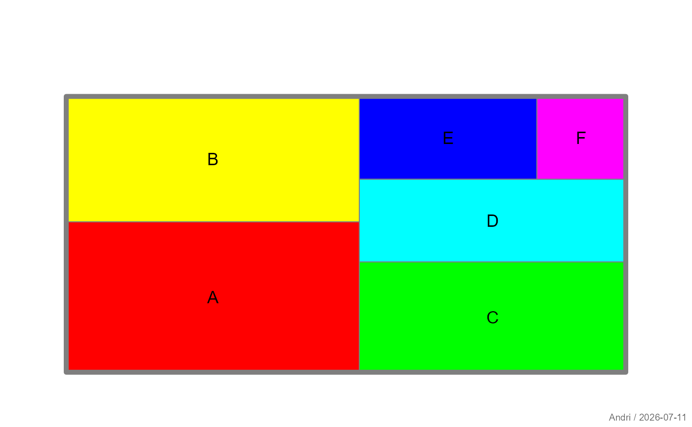
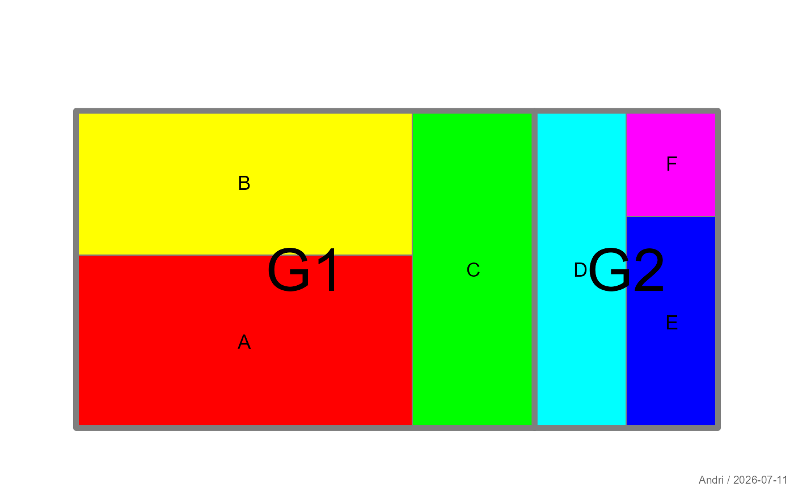
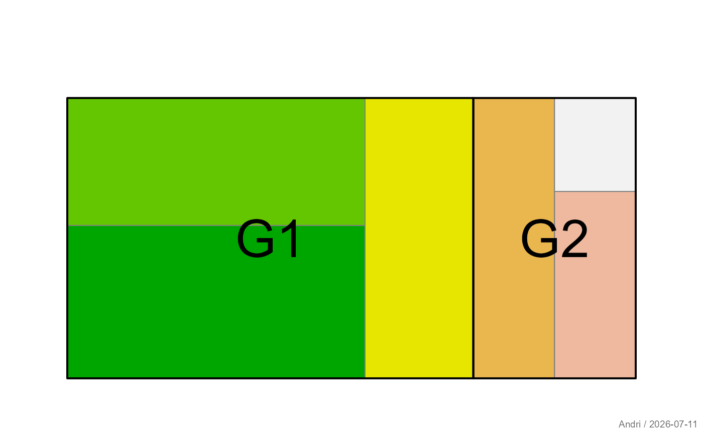

Draws a treemap in which the area of each rectangle is proportional to the
corresponding value in x. Optionally, rectangles can be grouped into
higher-level regions.
Usage
plotTreemap(
x,
groups = NULL,
area = NULL,
labels = NULL,
groupArea = NULL,
groupLabels = NULL,
main = NULL,
...
)Arguments
- x
Numeric vector of positive values determining the rectangle sizes.
- groups
Optional grouping variable. Values sharing the same group are placed within a common enclosing region.
- area
Controls the appearance of individual rectangles.
NULLorTRUE: use defaults.FALSEorNA: suppress rectangle fill.Atomic vector: interpreted as
col.List: graphical parameters such as
col,border, andlwd.
- labels
Controls the labels of individual rectangles.
NULLorTRUE: use default labels (names(x)).FALSEorNA: suppress labels.Character vector: interpreted as label text.
List: label properties such as
text,col, andcex.
- groupArea
Controls the appearance of enclosing group regions. Uses the same conventions as
area.- groupLabels
Controls the labels of enclosing group regions. Uses the same conventions as
labels. By default, group names are used when more than one group is present.- main
Main title of the plot.
- ...
Additional graphical parameters passed to
.applyParFromDots().
Value
Invisibly returns a list containing the coordinates of group centres and the centres of their child rectangles.
Details
The appearance of individual rectangles and groups is controlled through the
area, labels, groupArea, and groupLabels
arguments. These accept logical values, vectors, or lists.
Individual rectangles are sized according to the values in x. When
groups is supplied, a treemap is first constructed for the groups,
and each group's area is then subdivided among its members.
The arguments area, labels, groupArea, and
groupLabels provide a flexible interface for controlling the
appearance of the plot while keeping the main function signature compact.
See also
Other plot.special:
plotBinaryTree(),
plotCirc(),
plotMiss(),
plotPolar(),
plotPropCI(),
plotTernary(),
plotTimeSeries(),
plotWeb()
Examples
x <- c(A = 6, B = 5, C = 4, D = 3, E = 2, F = 1)
plotTreemap(x)

plotTreemap(
x,
labels = list(col = "white")
)
grp <- c("G1", "G1", "G1", "G2", "G2", "G2")
plotTreemap(
x,
groups = grp,
groupLabels = TRUE
)

plotTreemap(
x,
groups = grp,
area = terrain.colors(length(x)),
labels = FALSE,
groupArea = list(border = "black", lwd = 2)
)
